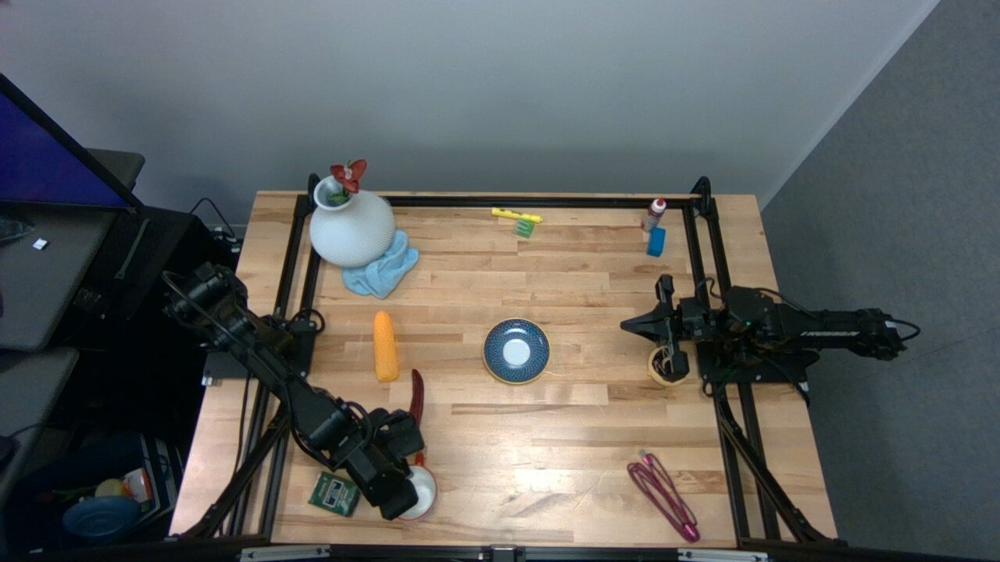

NeurIPS 2026 Robot Learning Workshop Accepted
Augmentron
We can only collect robot data
in so many rooms.
We want our robots to work in everybody’s homes. Augmentron changes the room or table around a recorded demonstration. We generate the scene once, then show it from every recorded camera view. The motion and task stay the same.
One motion.
More worlds to learn from.
Choose a task. Pause the video.
Switch room and surface edits to compare the same moment.
Choose a task
Choose an edit
A generated room surrounds the recorded robot and towel.
What stays
The recorded motion.The task objects.The training labels.
Generated appearance. Recorded robot motion. Room and surface edits keep the same moment when you switch.
About these clips
These montages come from my intern presentation and cycle through several generated appearances. Some masking artifacts remain. The task buttons open room and surface versions of one recorded motion. Gallery selections include other demonstrations.
The final paper generates scene assets once and reuses them through a trajectory. The montages illustrate the edits; their changing appearances do not demonstrate that temporal consistency.
More tasks. More settings.
Choose an example to open all four cameras at the pictured moment.
From edited videos to robot learning
What should the robot learn
from a demonstration?
A person teaches the robot by controlling its movements. The model learns which action to take from the camera images, the robot’s position, and an instruction. The recording also contains a particular room and table.
We wanted those demonstrations to teach the same task across more visual settings. A cup still goes on the same saucer, so its recorded action labels still make sense. The physical tests ask whether that helps in a setup the robot has never seen.
How does this work?
Protect what stays.
Generate and render what changes.
We keep the recorded behavior and change its visual setting. Masks protect the robot and task objects. Generated scene assets supply the new room and table.
Protect the recorded pixels
What shouldn’t change?
The towel and grippers must stay where the recorded motion expects them. We protect those pixels, then edit the room or table around them.
The recorded joint angles and camera calibration place the robot’s 3D model in each view. Task instructions guide masks for the objects and tabletop.
Green: protected robot. Purple: protected towel. The source mask also includes a few edge regions.

Schematic. Each face is an image generated once. Every recorded camera pose selects a view from that same room.
Generate once. Reuse across cameras.
“I just want to put this robot
and its objects in a new room.”
A room can be six 2D planes: a floor, a ceiling, and four walls. We generate those images once. Then we render the same room from each fixed or wrist camera’s recorded pose, at every moment in the demonstration.
For a surface edit, we anchor a generated texture to the calibrated table plane. As the camera moves, the texture stays attached to the table.
The full pipeline below includes robot-mesh projections, SAM 3 masks, a temporal-median reference, and FLUX.2-klein-4B scene generation.
See the full pipeline from the paper

What reuse saves
30 minutes of video.
28 minutes to augment.
All four camera streams.
One node with eight H100s.
104 cup demonstrations.
Measured processing time
Measured wall-clock time on the same 30-minute, four-view source set. Augmentron runs at 0.93× source duration. Longer trajectories mainly add rendering and compositing work.
Timing scope and Cosmos-Transfer1
Cold model construction through local output audit. Excludes queueing, container-image retrieval, credential gates, artifact staging, inter-boot delays, and publication.
Cosmos-Transfer1 takes 10.31 hours for a measured single-view run. The paper extrapolates 23.79 hours for four views; that four-view figure was not measured directly.
Physical evaluation
Does the robot improve?
With extra objects on the table, success rises from 18.0% to 45.3% across three tasks. We replaced half the training data with Augmentron edits and kept the data volume and training schedule the same.


Training comparison
Replace half the data. Keep the volume.
Both models train for 30,000 updates on the same volume of data. Half of the Augmentron recipe remains real; the other half uses room and surface edits.
RoboEngine generates augmented training videos. Masked Noise adds static, pixelation, blur, blackout, or color jitter outside the protected robot and task objects. The comparison evaluates complete recipes with different data volumes.
Test setting
Success across all three tasks
Only full task completion counts as success. 150 rollouts per condition across three tasks, 50 per task. One training seed.

A few extra objects.
The task stays the same. We add objects around the workspace.
Illustrative still from the intern presentation.
Add extra objects to the table, and the real-only baseline falls to 18.0%. Half-augmented training reaches 45.3%. All three tasks improve under distractors.
across three tasks
We changed the room and the surface. We didn’t explicitly insert distractors around the task. The test asks how well that transfers to a different kind of visual shift.
All results and experimental details
Same volume: real only and 50/50 share the 30k-step schedule and 1× data volume. Source episodes are split into disjoint halves, so every demonstration is represented once.
Larger recipes: all three train for 45k steps. Augmentron uses 3× volume; RoboEngine and Masked Noise use 2×. We evaluate the pipeline components together, so these results do not isolate the contribution of each component.
Exploratory checkpoint: the 30k Augmentron 33/67 checkpoint comes from a run scheduled for 45k steps. Compared with 50/50 at 30k, pooled distractor success rises from 45.3% to 50.7%, while original-setup and surface success fall. Its data volume and decay schedule differ. These runs do not establish a scaling trend.
Cameras and trials: Augmentron processes two fixed and two wrist streams. The trained model observes the high fixed view and both wrists. Starting configurations are manually reset and unpaired across models. Progress is scored from 0 to 3; only a score of 3 counts as success.
On a small screen, scroll the table sideways to see all three conditions.
| Steps | Recipe | Volume | Task | Original | Distractors | Steel |
|---|
“I need to pick up a flower.
I need to put it in the vase.”
Watch two example trials with distractors.
The chart above summarizes the full evaluation.
Progress is scored from 0 to 3. A score of 3 counts as task success. These illustrative trials come from the intern presentation and use different manually reset starting configurations.
There’s still a lot
of work to do here.
The matched experiment gives us a useful result: visual variation can help a robot handle a new setup at the same data volume and training schedule.
The gains vary by task. These tests cover three tasks, three visual conditions, and one training seed. Augmentron also needs calibrated cameras, robot geometry, and usable masks. It changes appearance while keeping the recorded behavior.
The next question I’d like to ask: what happens when this goes into pretraining or midtraining?
The experiments here are fine-tuning runs. Larger-scale training remains future work.
Augmentron
Scalable Multi-View Visual Augmentation
for Robot Learning
Accepted to the 8th Robot Learning Workshop:
Is Physical AI Going Zero-Shot?
NeurIPS 2026
The talk tells the story of an earlier version. This page uses the paper’s final method and experimental results.
Cite the work
@misc{tandon2026augmentron,
title = {Augmentron: Scalable Multi-View Visual
Augmentation for Robot Learning},
author = {Tandon, Tanay and Doriwala, Aseem and
Choghari, Jade and Weaver, Catherine and
Mannam, Pragna},
year = {2026},
note = {Accepted to the 8th Robot Learning Workshop
at NeurIPS 2026},
url = {https://tanaytan.github.io/augmentron/}
}Scale intern presentation · 17 minutes